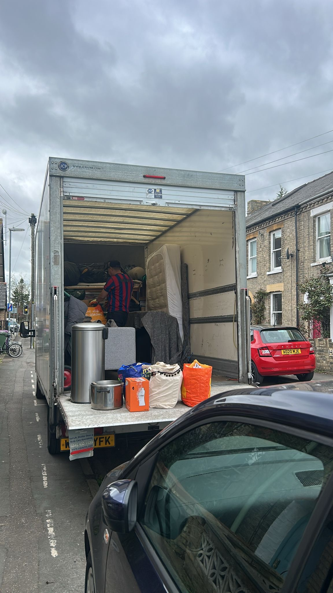
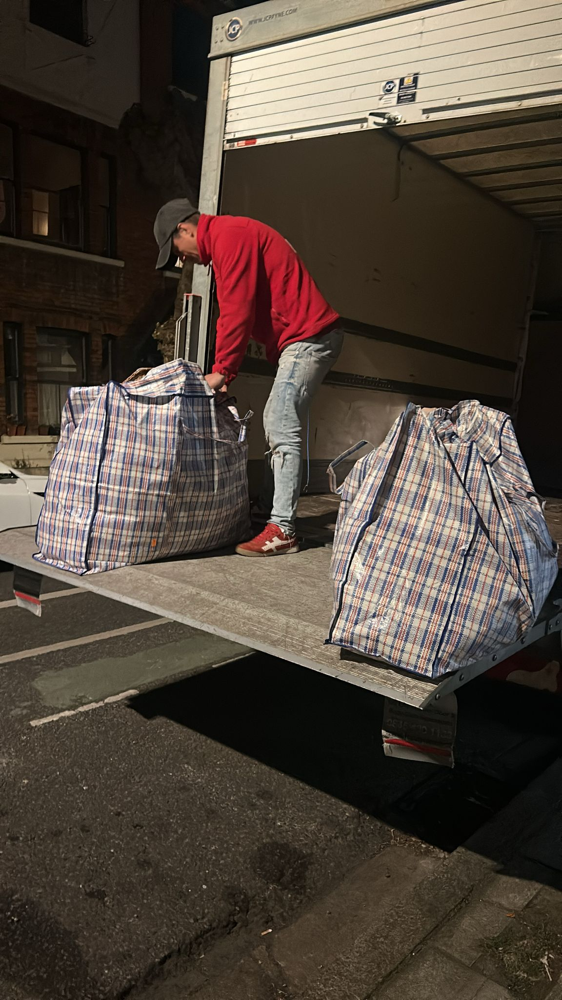
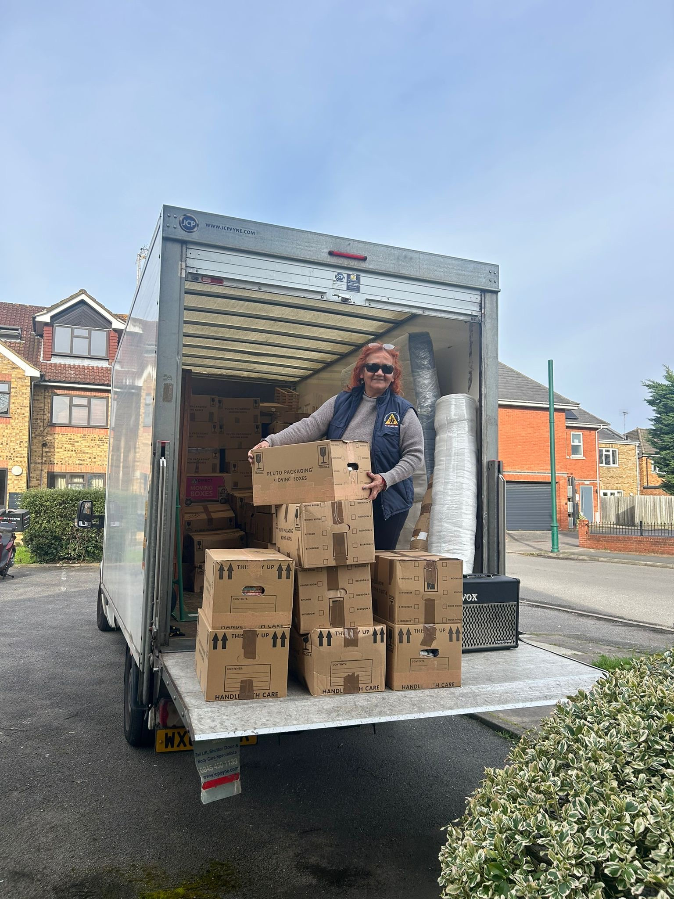

Removals Tooting SW17
Professional removals in Tooting for houses, flats and local relocations with a calm, organised process from booking to unloading. Our team works in SW17 every week and plans around access, parking and timing so your move stays structured.
Moving in Tooting: Local Context That Matters
Moves in Tooting often combine tighter residential streets, active parking controls, upper-floor flats and short completion windows. That practical mix can affect vehicle positioning, loading sequence and the time needed for furniture handling. For customers searching for professional removals Tooting, the quality of planning usually matters as much as the moving crew itself.
We regularly carry out house removals Tooting and flat moves across SW17, including terraces with limited frontage and apartment entrances where access needs to be pre-arranged. Our approach is straightforward: confirm the logistics early, allocate the right team and keep communication clear throughout the day.
Our Services in Tooting
House & Flat Removals in Tooting
Our house removals Tooting and flat removals Tooting service is designed for busy residential moves where access and timing need attention. We protect furniture, organise box flow room by room, and coordinate stair carries or lift use so unpacking at the new address is more efficient and less disruptive.
If you are comparing options for removals services in London, we focus on structured execution rather than rushed loading, especially for family homes and multi-floor flats around SW17.

Man and Van Tooting
Our man and van Tooting option suits smaller relocations, furniture transport, student moves and short-notice bookings. Customers also contact us for man with a van Tooting support when a full-scale move is not required but careful handling still matters.
For short-distance moves across SW17 and nearby districts, we provide dependable local movers Tooting with clear communication, organised loading and realistic time planning.

Office & Small Business Moves in Tooting
We handle office removals Tooting for small teams, clinics, studios and retail units that need a tidy, low-disruption relocation. Workstations, stock, archive boxes and IT equipment are moved with clear labelling so reopening is faster.
As a Tooting removals company, we also support weekend and staged business moves where access windows are limited and coordination with building management is required.

Why People Choose Us in Tooting
Customers choose us for organised planning, careful handling and practical local experience rather than generic promises. Every booking is prepared with access notes, loading sequence and arrival timing so the move day remains controlled.
Organised pre-move planning and clear communication
Careful handling for furniture and fragile items
Experience with SW17 access and parking logistics
Fully insured service with professional standards
Clear pricing structure with no hidden extras
Support for furniture removals Tooting and packing needs
Whether you need planned removals in Tooting, a packing service Tooting add-on, or responsive same day removals Tooting when availability allows, the focus stays on execution quality.
Practical Moving in Tooting
Tooting moves benefit from early logistics checks because CPZ rules vary street by street and timing can change how long a van can legally remain near the property. In E1 around Tooting Broadway and St George's, controls typically run 9:30 am to 5:30 pm Monday to Saturday, often with a maximum four-hour visitor stay. E2 includes mixed controls, including a one-hour parking pattern on some roads to discourage commuter parking. D2 around Wandsworth Common and Tooting Bec is usually restricted from 11:30 am to 12:30 pm Monday to Friday.
These windows directly affect loading plans, especially for longer house moves. Near St George's Hospital there are specialist eight-hour stay bays that can help with longer visits, while streets such as Mandrake Road and Dalebury Road may have extended restrictions that require extra planning. Where buildings are permit-free, residents cannot rely on standard on-street resident permits, and some estates need separate estate permits. For flats and managed blocks, confirming these details in advance avoids delays on move day.
Road rules matter too: dropped kerbs are enforceable even without yellow lines, double yellow lines operate 24/7, and single yellow lines usually follow CPZ hours unless local signage states otherwise. A 10-minute grace period can apply if a vehicle was legally parked before restrictions begin, but this should not be treated as working time for a full loading operation. We also account for School Streets around Tooting Primary School on Franciscan Road, where camera-enforced restrictions apply during weekday term-time drop-off and pick-up periods.
For customers planning SW17 removals, this is why local operational knowledge helps: permit arrangements, loading positions and route timing are coordinated before the moving team arrives. If your move starts in Tooting and continues elsewhere, we also support wider South West London removals, including Wimbledon moves, Earlsfield removals and Wandsworth moving services.
Planning a move in Tooting?
Speak with a team that understands busy SW17 logistics and can organise your move with clear timings, careful handling and practical preparation.
Use the instant quote calculator | Contact us to discuss your moveTooting Moving FAQ
Do you cover flat moves in Tooting?
Yes. We handle flat relocations across SW17, including upper-floor properties, converted homes and apartment buildings where access coordination is needed.
Can you provide man and van support in SW17?
Yes, we offer flexible man and van Tooting bookings for smaller moves, furniture transport and short-notice relocations when slots are available.
What if my road has controlled parking or limited access?
We plan around CPZ hours, visitor stay limits and loading constraints in advance, then agree practical timings so the move can run smoothly within local restrictions.
Do you handle moves near St George's Hospital and busier parts of Tooting?
Yes. We regularly work in these areas and account for busier roads, limited loading options and permit considerations before move day.